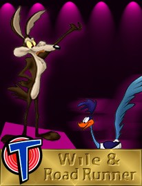

Road Runner & CoyoteIn the late `40s, storyman Michael Maltese and director Chuck Jones were searching for the right combination of far-out animals to populate the cartoon they envisioned as a parody of the constant chases that had come to dominate animation. They finally settled on an emaciated Coyote chasing a supersonic Road Runner and got it on the screen in Fast and Furry-ous in 1949. Audiences laughed, but no one saw it as a parody of anything. So for 15 years, Maltese and Jones had to content themselves with turning out one of the most popular series of cartoons ever made.
Most of us, having attempted to capture a roadrunner two or three times and failed, would give up and go chase a rabbit. But Wile E. Coyote is earnestly trying to prove to himself that such a thing is possible for him. And he has somehow gotten the idea that since simple schemes don't work, complicated ones must be the answer.
Yet all he proves is that the more elaborate his preparations, the greater the chances of something going wrong, so that his obsession proves his undoing over and over. There he is, staring at the dynamite, watching the impending onslaught of arrows, or, worst of all, sailing off one of those ubiquitous 5-mile cliffs, with nothing to do but submit to his fate--then go on with the next scheme, momentarily restored by the fadeout, pretending none of this has happened.